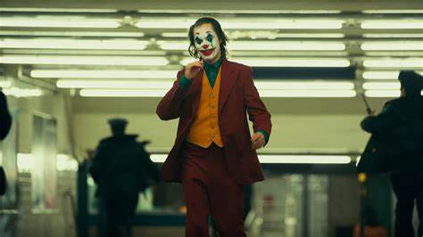
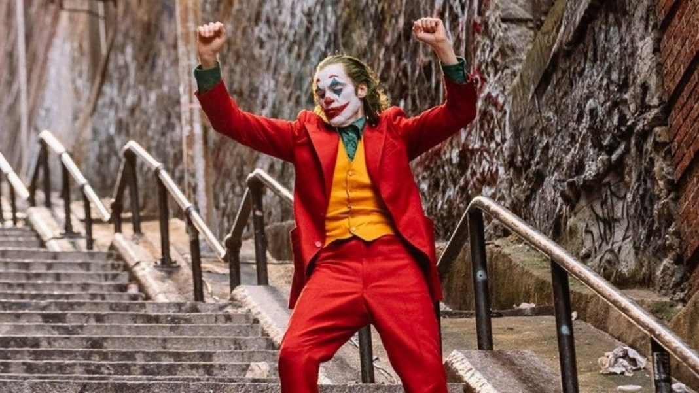

Joker is probably one of my all-time favoriute live-action DC films since the latest Suicide Squad film back in 2021
with John Cena as Peacekeeper. As a standalone film that supposed to showcase an origin story to the famous villian,
this movie does a fantastic job living up to the hype that was generated by longtime DC comics fans.

I should start by sayng this. Dispite this movie staring the Joker, this is NOT a batman film. Batman in a way does
appear in this film but as a child before his parents are murdered. The film stars Joaquin Pheonix as Arther Fleck a
full-time clown working for a rent-an-entertainer business who has an aspiration to be a famous comedian. Dispite these
aspirations, its shown very quickly that Arthur is a very deepy disturbed, and deranged man with a number of mental health
troubles. These troubles of his coupled with his brutal life in the crime-filled city of Gotham slowly cause Arthurs life
to go from bad to even worse over the course of several weeks. Eventually, Arthur snaps from the pressure and become the Joker.
Joker's greatest triumphs are its writing, the acting, and the stellar cinematography. Todd Phillips (the Director of this film)
does a fantastic job at showing the audience just how unforgiving and cruel the world that Arthur lives in is, and how every aspect of his
life slowly makes him lose it and become the nihilistic maniac at the end of the film. When I say EVERY part of Arthurs life is cruel and
dark, I do mean, EVERY part of it. From the city he lives in, the people that live there, his job, his family life, his mental state, his
lack of friends, and even his parental abuse past that gets dug up near the half-way part of the film. It really makes you empathise with Arthur
and makes you understand why he makes the choices he does, it makes you empathise with a mentally damaged man whose had an incredibly rough life,
even though his actions are cruel and unjust.
Speaking of the Joker, Joaquin Pheonix's performance as the iconic villian in this movie was absolutly fantasic. I honestly can't think of any other actor
off the top of my mind that can potray the kind of raw emotion and instability that a character like Arthur is like Joaquin can. He had alot of responsibility
to give a performance that was on par to or even better than Heath Ledger's Joker in 2008's The Dark Knight, and I say that Joaquin absolutly
did his part. There was alot of debate and discussion online after the movie came out as to whether the Joker in this film or Heath Legers Iconic Dark Knight Joker
is better. Honestly. I can't decide which of the two outperformed the other. Its like taking a Ferrari and a Lamborghini and asking which of the two looks nicer.
Aside from Joaquin, the other actors in the film did a phenominal job as well, especally Robert De Niro as Murray Franklin who play this late night television comedian
similar to Conan O Brian. He's a man thtt Arthur looks up to like a role model, but after an incident that I refuse to spoil involving a comedy performance Arthur does & Murray's
show, his admiration for him turns to bitter hatred which leads up to an iconic and very well acted confontation at the end of the movie.
Another major thing I love about the movie is the way the scenes are shot and how the scenes are pieced together. I know its an unusual thing to bring up, but there are certain scenes
where the camera appeaks to be just shy of some of the scenes that are happening, I believe the director came out and stated that scenes like these were references to comic panels in superhero
comics where the villians either beat an assilant with the blows landing offscreen. This will also be a slight spoiler, but I also love how there are scenes in the movie that showcase the Joker's warped
perceptance of reality. One scene has the Joker in the audiance of Murray's live action show getting a standing ovation by Murray and the audience around him, but it turns out to be a facade
he dreamed of about what he really wants, there are also multiple scenes through out the film that have Arthur interacting with one of his apartment neighbors Sophie Dumond played by
Zazie Beets There was one interaction that she has with Arthur on his way home from work which has her act friendly and joke aroudn with Arthur, but because of how lonley & mentally
ill he is, he takes this as a token of friendship that hes not as lonley as he believed. However later in the movie, its revealed thhat this is a facade. Throughout the film, Sophie is shown to have
numerous interactions with Arthur throughout the film, howver its revealed that she was never by his side or truly interacted with him what-so-ever and that he just imagining heer being There
with him, cementing that throughoutt the movie, he was truly lonley, he just imagined her by his side to make this seem like it wasn't the case. A truly dark concept to the Jokers character.

Joker is a very fantastically written and shot psychologiocal thriller that really makes you root for the bad guy and makes you want him to get his happy moment dispite everything that gets thrown
at him throughout the movie. The film is a long one clocking in at over an hour and a half for its run time, but theres never a dull moment in this film. Every shot, every scene, every moment in the film
is done beautifully and really shows how bad some people have it in the world and how and why certain people become mentally deranged and how just one bad day or week full of terrible events can destory
someone and make them sick at the world around them. Its definitly a must watch for any superhero fans as it does the Jokers character Justice. Its definitly one of the best live-action DC films the studio
has put out, and with a sequal in the works for late 2024, theres alot more in store for Joaquin Peonix's Joker